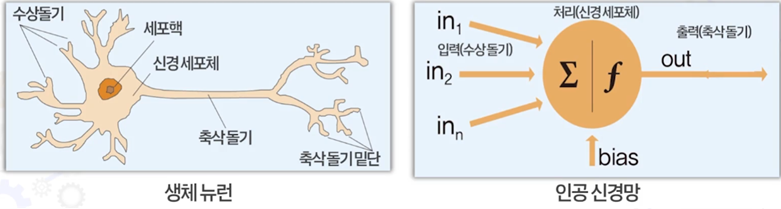
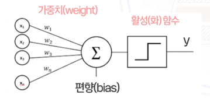
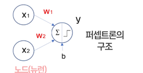
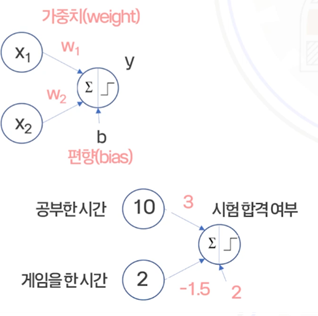
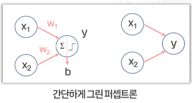
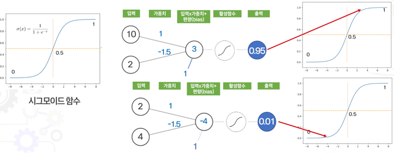

인공지능, 딥러닝의 역사부터 인공신경망, 퍼셉트론의 수학적 계산 구조 완벽 정리
1000개의 다른 이미지를 인식하고 분류하는 대회로, 2012년 딥러닝이 기존의 방법보다 뛰어난 성능을 증명한 계기가 됨.
대중에게 인공지능과 딥러닝이 널리 알려진 결정적 계기가 된 역사적인 세기의 대국.
인공지능 연구에서 딥러닝이 사용되지 않는 영역이 없을 만큼 눈부신 황금기를 맞이하고 있음.
👉 이미지, 텍스트, 소리와 같은 데이터에서 뛰어난 성능을 보임
하나의 이미지에서 여러 대상(자동차, 사람 등)을 정확하게 탐지
인간의 말과 문맥의 의미를 완벽하게 이해하고 대답
상상 속의 세상이나 새로운 고화질 이미지를 척척 생성
흐릿한 저해상도 사진을 선명한 고해상도로 변환
수상돌기 ➡️ 세포핵 / 신경세포체 ➡️ 축삭돌기 ➡️ 축삭돌기 말단
입력 (in1, in2, ..., inn) ➡️ 처리 (신경세포체 Σ 와 활성화 함수 f, 편향 bias) ➡️ 출력 (out)
- 딥러닝은 머신러닝의 다양한 모델중 인공신경망을 기반으로 함



| 공부한 시간 (X1) | 게임을 한 시간 (X2) | 합격 (y) |
|---|---|---|
| 10 | 2 | 1 (합격) |
| 2 | 4 | 0 (불합격) |


입력된 총합이 임계값(0)을 넘으면 1을 출력하고, 넘지 못하면 0을 출력합니다.
출력값이 0과 1 사이의 부드러운 연속적인 값(확률 등)으로 변환되는 활성화 함수입니다[cite: 4].
